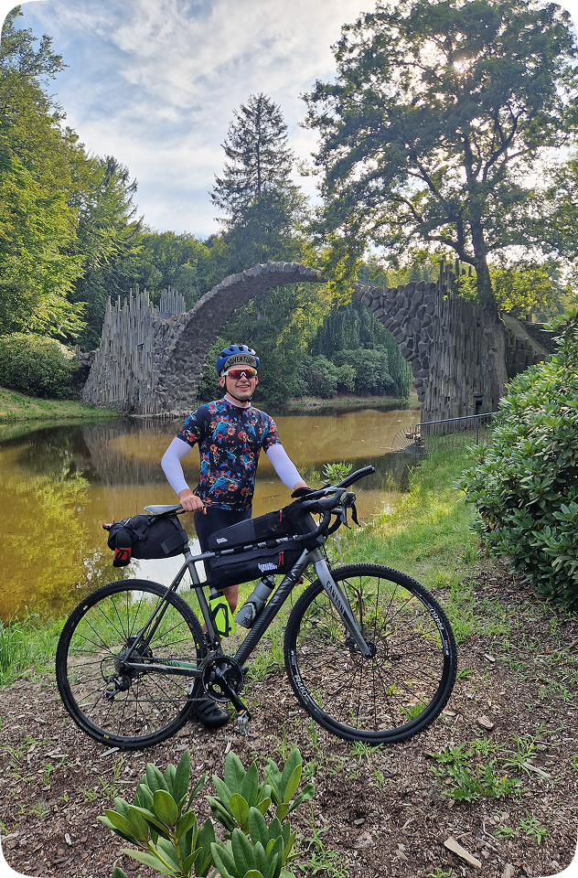
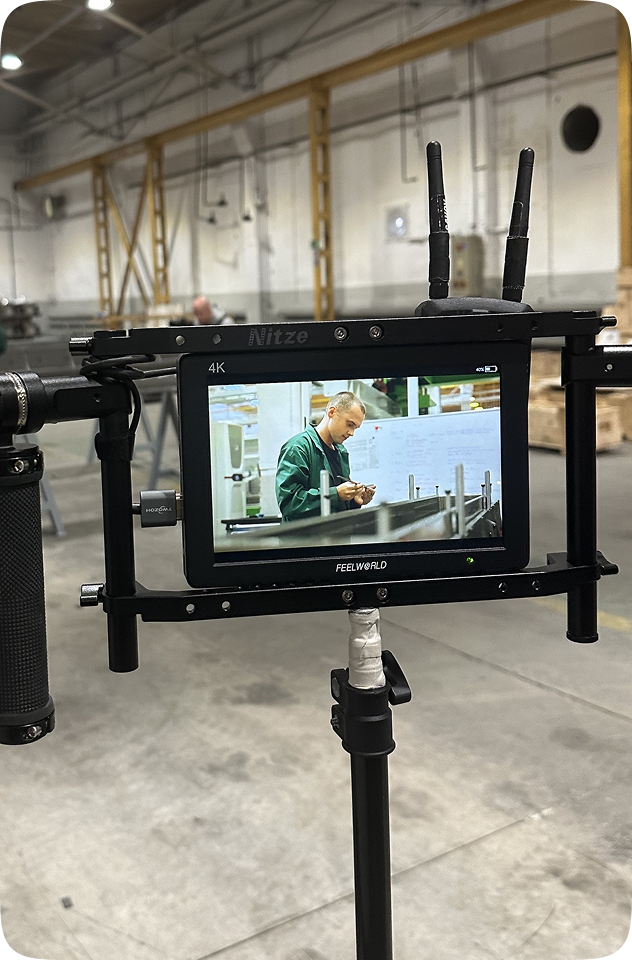
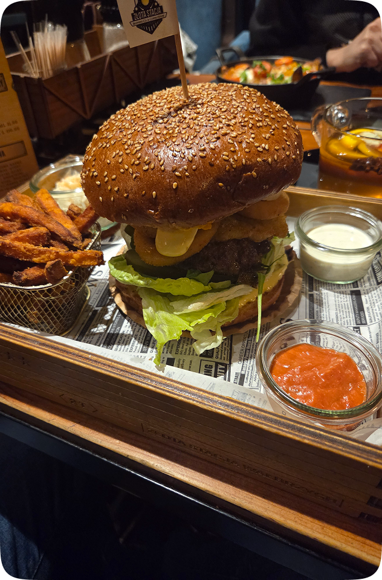
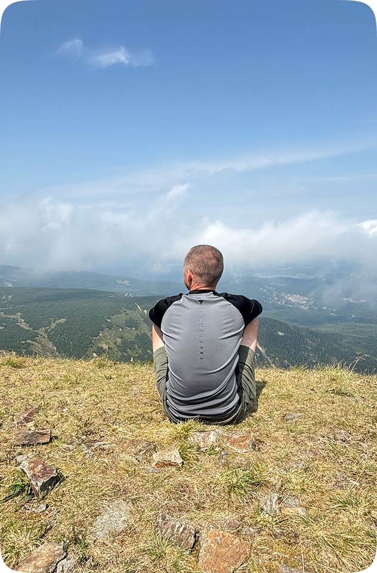

Working knowledge
- — Semantic HTML5
- — Flexbox
- — Markdown
- — JS: Local storage
- — Figma
- — CSS grid
- — Forms
- — JS: DOM manipulations
- — SASS
Krzysztof Jerzyk
Frontend developer

You might be interested in checking the list of my skills. Don't forget to have a glimpse at my projects. I'm looking for a new challenges so if you have one - contact me 😊
I've picked up some cool skills along the way, and I'm excited to
share them with you.
Check out what I can do below!


I decided to refresh my knowledge from my IT studies, focused on the frontend topic, I've completed some projects and picked some cool skills. Check out what I can do below.
Outside of my regular working hours, I delve into an array of activities and passions. Here's a glimpse into how I spend my after-hours and a brief description of my current work.

Outside of my regular working hours, I like to spend time actively, one of my favorite activities is cycling

This is my current job, where I have gained skills in the production of railroad components and learned how to operate many measuring instruments.

In my free time, I enjoy discovering new flavors, restaurants and cuisines, and experimenting with food whenever I get the chance.

Whenever I have the opportunity, I like to explore new places, hike in the mountains and enjoy moments of calm surrounded by nature.
I'm open for new opportunities.
If you have one for me we should
talk!
or find me on